방송통신산업기사 (2006-09-10 기출문제)
1과목: 디지털 전자회로
1. 3개의 T 플립플롭이 직렬로 연결되어 있다. 입력단(첫 단)에 1000[Hz]의 입력신호를 인가하면 마지막 플립플롭의 출력신호는 몇 [Hz]인가?
- 3000
- 333
- 167
- 125
(정답률: 알수없음)

2. 다음 그림의 회로는 무슨 회로인가?
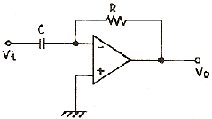
- 미분기
- 적분기
- 가산기
- 증폭기
(정답률: 알수없음)
3. 다음 중 RC 필터 회로에서 리플 함유율을 작게 하려면?
- R을 작게 한다.
- C를 작게 한다.
- R, C를 모두 작게 한다.
- R과 C를 크게 한다.
(정답률: 알수없음)
4. A, B를 입력으로 하는 반가산기의 올림수(Carry) C에 대한 논리식으로 맞는 것은?
- C = A + B
- C = AB
- C = A ⊕ B
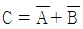
(정답률: 알수없음)
5. 그림의 논리회로는 어떤 논리작용을 하는가?
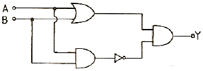
- AND
- OR
- NAND
- EX-OR
(정답률: 알수없음)
6. 그림의 회로에서 스위치가 t = 0일 때, 1에서 2의 위치로 갑자기 옮겨졌다. 이 때 흐르는 전류는?
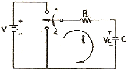
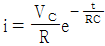
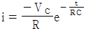
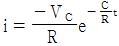
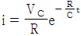
(정답률: 알수없음)
7. 에미터 플로워(emitter follower)의 임피던스 특성으로 옳은 것은?
- 입력임피던스와 출력임피던스 모두 작다.
- 입력임피던스와 출력임피던스 모두 크다.
- 입력임피던스는 크고 출력임피던스는 작다.
- 입력임피던스는 작고 출력임피던스는 크다.
(정답률: 알수없음)
8. 그림의 회로에서 R3, R4의 역할은 무엇인가?
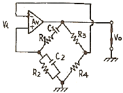
- 발진주파수를 결정한다.
- 증폭기의 이득을 안정시킨다.
- 발진파형을 톱니파로 만든다.
- 증폭기의 이득을 크게 한다.
(정답률: 알수없음)
9. 고주파 증폭회로에서 중화회로를 사용하는 주 목적은?
- 이득의 증가
- 주파수의 체배
- 자기발진의 방지
- 전력 효율의 증대
(정답률: 알수없음)
10. 다음 게이트 중 두 입력이 1과 0일 때 1의 출력이 나오지 않는 것은?
- OR 게이트
- EX-OR 게이트
- NAND 게이트
- NOR 게이트
(정답률: 알수없음)
11. 그림과 같은 발진회로에서 안정된 발진이 지속되기 위한 동조회로의 임피던스는 어떻게 되어야 하는가?
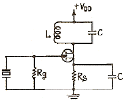
- 저항성
- 용량성
- 유도성
- 어느 경우든 상관없다.
(정답률: 알수없음)
12. 다음 변조방식 중에서 입력신호의 크기에 따라 펄스의 위치만을 변화시키는 변조방식은?
- PWM
- PPM
- PCM
- PAM
(정답률: 알수없음)
13. NOT, AND 및 EX-OR로 구성된 회로의 명칭은?
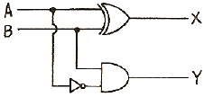
- 반가산기
- RS 플립플롭
- 전감산기
- 반감산기
(정답률: 알수없음)
14. 그림의 논리회로는 어떤 논리작용을 하는가?
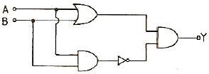
- AND
- OR
- NAND
- EX-OR
(정답률: 알수없음)
15. 멀티 바이브레이터에 대한 설명 중 가장 관계없는 것은?
- 부궤환의 일종이다.
- 회로의 시정수로 주기가 결정된다.
- 고차의 고조파를 포함하고 있다.
- 전원전압이 변동해도 발진주파수에는 큰 변화 없다.
(정답률: 알수없음)
16. 슈미트 트리거 회로의 출력파형으로 옳은 것은?
- 삼각파
- 정현파
- 구형파
- 램프(ramp) 파형
(정답률: 알수없음)
17. 그림 증폭회로의 전압이득 Av는 약 얼마인가?(단, gm = 10[m℧], RS = 2[kΩ]이다.)
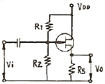
- 1
- 5
- 12
- 20
(정답률: 알수없음)
18. 다음 회로에서 Z1 = 10[kΩ], Z2 = 100[kΩ]일 때 전압 증폭도(Vo/Vi)는? (단, 연산 증폭기는 이상적인 것이다)
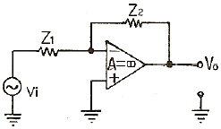
- -0.1
- -1
- -5
- -10
(정답률: 알수없음)
19. 주된 맥동전압주파수가 전원주파수의 6배가 되는 정류 방식은?
- 단상전파전류
- 단상브리지전류
- 3상반파정류
- 3상전파정류
(정답률: 알수없음)
20. 다음 중 연산 증폭기의 특성과 관련 없는 것은?
- 높은 이득
- 낮은 CMRR
- 높은 입력 임피던스
- 낮은 출력 임피던스
(정답률: 알수없음)
2과목: 방송통신 기기
21. 우리나라에서 사용하고 있는 컬러텔레비전(NTSC)의 주사방식은?
- 순차 주사
- 제어 주사
- 순서 주사
- 비월 주사
(정답률: 알수없음)
22. FM 송신기에서 프리엠퍼시스 회로를 사용하는 주 목적은?
- 잡음출력을 강제로 억압시킨다.
- 주파수 대역폭을 좁힌다.
- 신호대 잡음(S/N)비를 향상시킨다.
- 일그러짐(Distortion)을 감소시킨다.
(정답률: 알수없음)
23. 지상파방송과 비교한 위성방송의 상대적 장점이 아닌것은?
- 단일 방송파로 넓은 지역에 서비스를 제공할 수 있다.
- 많은 중계소를 설치하는 것보다 경제적이다.
- 넓은 주파수 대역을 통해 대용량의 정보를 보낼 수 있다.
- 초기 구축 비용이 상당히 절감된다.
(정답률: 알수없음)
24. 방송 수신기의 종합성능을 나타내는 주요 평가항목이 아닌 것은?
- 선택도
- 안정도
- 증폭도
- 충실도
(정답률: 알수없음)
25. VTR 출력 신호의 시간 축 변동을 보정하는 것은?
- TBC
- Frame
- Metrix
- Encoder
(정답률: 알수없음)
26. 위성방송에서 초고주파를 사용하는 가장 타당한 이유는?
- 적은 송신전력으로 먼 거리를 전파할 수 있다.
- 안테나를 작게 할 수 있다.
- 전리층 반사를 이용한다.
- 전파의 회절성이 강해 전파도달 범위가 넓다.
(정답률: 알수없음)
27. 위성 DBS 중계기 안테나를 통해서 받는 전파는?
- 수평편파
- 수직편파
- 구형파
- 원편파
(정답률: 알수없음)
28. 방송국내의 영상전송 시스템에서 휘도 및 색도성분을 갖고 있는 테스트 신호를 시스템 입력에 가하고, 출력에서 테스트 신호의 휘도성분에 대한 색성분의 진폭변화를 정의하는 항목은?
- 색도-휘도간 이득 불균형
- 색도-휘도간 지연 불균형
- 휘도 비선형 지연 왜곡
- 색도 비선형 이득 왜곡
(정답률: 알수없음)
29. 방송위성용 지구국 안테나의 성능조건으로 맞지 않은 것은?
- 지향성이 좋아야 한다.
- 안테나 이득이 높아야 한다.
- 대지 반사파를 적게 받아야 한다.
- 고잡음 온도 특성을 가져야 한다.
(정답률: 알수없음)
30. 다음 CATV 구성 부분 중 Head-End 계에서 송출된 신호를 가입자 단말기기까지 전송해 주는 통로로서 트렁크라인, 분배기 등으로 구성된 계통은?
- head-End 계
- 전송로계
- 단말계
- 방송국 운영체계
(정답률: 알수없음)
31. 다음 중 NTSC TV 전송의 영상신호에 사용되는 변조방식은?
- SSB(Single side band)
- VSB(Vestigial side band)
- DSB(Double side band)
- FSB(Frequency side band)
(정답률: 알수없음)
32. FM 수신기에서 AFC 회로가 사용되는 주된 이유는?
- 국부발진주파수를 제어하기 위해
- 감도를 조정하기 위해
- 선택도를 높이기 위해
- 감도를 높이기 위해
(정답률: 알수없음)
33. 수신기의 내부잡음 중 저항에서 발생되는 불규칙한 잡음으로 백색잡음(White noise)의 형태를 갖는 잡음은?
- 열 잡음
- 샷 잡음(shot noise)
- 분배 잡음
- 플리커 잡음(filcker noise)
(정답률: 알수없음)
34. 영상신호의 색신호 성분을 복조하여 그 위상과 진폭을 브라운관상에 표시하는 측정기로서 통산 휘도순 컬러 바 신호를 사용하여 스튜디오 송출 출력이나 각 개별기기의 출력 특성을 관측하는데 사용하는 장비는?
- 마스터 모니터(Master Monitor)
- 파형 모니터(Waveform Monitor)
- 벡터 스코프(Vector Scope)
- 스펙트럼 분석기(Spectrum Analyzer)
(정답률: 알수없음)
35. 표준 컬러 TV 방송에서 전송되는 색상은 적색, 녹색, 청색의 3색을 조합하여 3개의 영상신호를 얻는다. 이 3개의 영상신호 중 흑백의 구분만을 나타내는 휘도 신호의 대역폭은 대략 얼마인가?
- 5.0[MHz]
- 4.2[MHz]
- 1.6[MHz]
- 0.6[MHz]
(정답률: 알수없음)
36. PCM에서 음성전화의 경우 주파수가 약 300~3400[Hz]이고 유효전송 대역이 4[kHz]이다. 이 때의 최대 표본화 간격은 어느 정도인가?
- 125[us]
- 200[us]
- 225[us]
- 250[us]
(정답률: 알수없음)
37. 오실로스코프를 이용하여 피변조파를 측정한 결과 다음과 같은 변조 포락선이 나타났을 때 변조도는 얼마인가?
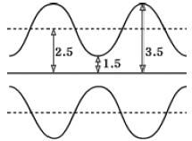
- 16[%]
- 25[%]
- 40[%]
- 80[%]
(정답률: 알수없음)
38. 슈퍼헤테로다인 수신기의 중간주파수가 455[kHz]일 때 수신된 500[kHz]에 대한 영상 주파수는?
- 955[kHz]
- 1410[kHz]
- 410[kHz]
- 1545[kHz]
(정답률: 알수없음)
39. 다음 중 컬러 TV 방송의 국제 표준 방식이 아닌 것은?
- SECAM 방식
- NTSC 방식
- PAL 방식
- FDM 방식
(정답률: 알수없음)
40. 마이크의 지향성과 관계없는 것은?
- 전지향성
- 단일지향성
- 수직지향성
- 양지향성
(정답률: 알수없음)
3과목: 방송미디어 개론
41. 뉴미디어 분류체계 중 방송계에 포함되지 않는 것은?
- AM 스테레오방송
- FM 다중방송
- CATV
- 영상전화
(정답률: 알수없음)
42. 사운드 카드에 다양한 효과를 주기 위한 디지털 신호처리칩을 의미하는 용어는?
- DSP(Digital Signal Processor)
- ADPCM(Adaptive Delta Pulse Code Modulation)
- DAC(Digital Analog Converter)
- ADC(Analog Digital Converter)
(정답률: 알수없음)
43. 전송방식에서 한쪽에서 송신할 때는 상대방은 수신만해야 하고, 한쪽에서 수신 상태로 해야 상대 쪽에서 송신할 수 있는 방식은?
- Simplex
- Full Duplex
- Half Duplex
- Multiplex
(정답률: 알수없음)
44. 연주소와 송신소를 마이크로웨이브 통신망(microwave- link)으로 연결하는 회선은?
- FPU
- STL
- 출중계
- 토크백
(정답률: 알수없음)
45. 다음 중 MPEG-7에 대한 설명으로 가장 적합한 것은?
- 동영상 전송방식이다.
- 음성, 데이터 및 영상 데이터베이스 검색이 가능하도록 한다.
- 오디오와 비디오 콘텐츠 인식 툴에 대한 표준을 제공한다.
- MPEG-2의 대체 수단으로 기능이 같다.
(정답률: 알수없음)
46. 디지털 위성방송의 장점이 아닌 것은?
- 안테나가 소형임으로 낮은 C/N으로 시청이 가능하다.
- 디지털 변조가 가능하다.
- CD 수준의 오디오 서비스를 제공할 수 있다.
- 정지화 방송, 문자 다중방송 등 부가서비스를 제공하지 않는다.
(정답률: 알수없음)
47. 문자다중방송은 TV 방송전파 중 어느 것을 이용하여 문자를 전송하는가?
- 수직귀선소거 기간
- 수평귀선소거 기간
- 순차주사 기간
- 비월주사 기간
(정답률: 알수없음)
48. 아나운서가 카메라를 보면서 원고를 읽을 수 있게 지원해 주는 것은?
- 뷰 화인더
- 프럼프터
- 마이크로폰
- 스크램블
(정답률: 알수없음)
49. FM 라디오 방송과 AM 라디오 방송에 대한 설명으로 옳은 것은?
- FM은 주파수변조 방식, AM은 진폭변조 방식을 의미한다.
- FM파는 AM파에 비하여 직진성이 매우 약하다.
- AM파의 경우 혼신 및 잡음이 적어 고품의 방송에 유리하다.
- FM은 스테레오 방송만 가능하며, AM은 모노 방송만 가능하다.
(정답률: 알수없음)
50. MPEG은 영상신호 압축방식으로서 국제표준화되어 영상전송분야에 널리 적용되고 있다. 다음 중 HDTV 방송이나 디지털지상파 TV, DVD 등에 적용되는 것은?
- MPEG 1
- MPEG 2
- MPEG 3
- MPEG 4
(정답률: 알수없음)
51. NTSC 아날로그 지상파 TV 방식에서 영상신호와 음성신호의 변조방식은?
- 영상은 진폭변조, 음성은 주파수변조
- 영상, 음성 모두 진폭변조
- 영상, 음성 모두 주파수변조
- 영상은 주파수변조, 음성은 진폭변조
(정답률: 알수없음)
52. 해상도를 크게 개선함은 물론 1125 주사선에 9대 16의 종횡비로 크게 확대하여 보다 많은 양의 정보를 전달할 수 있는 것은?
- NTSC
- HDTV
- 팩시밀리 방송
- 데이터 방송
(정답률: 알수없음)
53. 수평톱니파의 주파수가 15750[Hz]이며 귀선시간이 18%일 때 1회 유효주사선 시간은 약 얼마인가?
- 3[μs]
- 16[μs]
- 52[μs]
- 63[μs]
(정답률: 알수없음)
54. 다음 중 문자미디어의 특성에 가장 적합한 것은?
- 시간집약성
- 즉시성
- 기록성
- 시청각성
(정답률: 알수없음)
55. 다음 중 위성방송에서 적용되는 전송방식은?
- QPSK
- AM
- FM
- VSB
(정답률: 알수없음)
56. 다음 중 전리층을 이용한 국제 원거리 방송에 사용되는 주파수대는?
- 중파
- 단파
- 초단파
- 극초단파
(정답률: 알수없음)
57. 다음 중 TV방송에서 비월주사 방식을 하는 주된이유는?
- 화면의 깜박거림을 줄이기 위해서
- 비월주사 방식이 경제적이므로
- 유럽 선진국과 보조를 맞추려고
- 주사방식은 비월주사방식 뿐이므로
(정답률: 알수없음)
58. AM과 비교하여 FM 통신방식의 특징이 아닌 것은?
- S/N비가 좋다.
- 송신기의 효율을 높일 수 있고, 일그러짐이 적다.
- 혼신 방해를 적게 할 수 있다.
- 주파수 대역폭이 AM보다 작다.
(정답률: 알수없음)
59. 다음 중 멀티미디어 정보전달의 속도를 향상시키고, 동화상, 음성등과 같은 데이터를 53바이트의 셀로 전송하는 것은?
- ATM
- CATV
- VOD
- MPEG
(정답률: 알수없음)
60. 다음 중 멀티미디어 기술의 바람직한 발전방향이 아닌것은?
- 고속화
- 네트워크화
- 표준화
- 기억용량의 소형화
(정답률: 알수없음)
4과목: 전자계산기 일반 및 방송설비기준
61. 어떤 명령이 수행되기 위해 가장 우선적으로 이루어져야하는 마이크로 오퍼레이션은 무엇인가?
- MBR ← PC
- PC ← PC+1
- IR ← MBR
- MAR ← PC
(정답률: 알수없음)
62. 다음 중 자기보수(Self Complement) 코드의 종류가 아닌 것은?
- 그레이 코드
- 3초과 코드
- 2421 코드
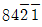
코드
(정답률: 알수없음)
63. 정보를 기억 장치에 기억시키거나 읽어내는 명령을 한 후부터 실제로 정보가 기억 또는 읽기 시작할 때까지의 소요되는 시간을 무엇이라 하는가?
- 접근 시간(access time)
- 실행 시간(run time)
- 지연 시간(idle time)
- 탐색 시간(seek time)
(정답률: 알수없음)
64. 다음 중 명령어가 해독되는 장치는?
- main storage
- ALU
- control unit
- instruction counter
(정답률: 알수없음)
65. 입출력장치와 중앙처리장치 사이에 존재하며 속도 차이로 인하여 발생하는 문제점을 해결하기 위해 고안된 것은?
- 레지스터 장치
- 어드레스 장치
- 채널제어 장치
- 단말기 장치
(정답률: 알수없음)
66. 10진수 12.3을 2진수로 진법 변환한 것으로 가장 근사값은 어느 것인가?
- 1100.11
- 1010.010010
- 1100.010011
- 1100.010001
(정답률: 알수없음)
67. DMA의 기능을 가장 타당하게 설명한 것은?
- 입출력을 위한 인터럽트를 최대화하여 데이터 전송을 수행한다.
- 보조기억장치의 속도차이를 해결하는 역할을 한다.
- 주변기기의 메모리 용량을 확대하는 역할을 한다.
- CPU의 개입 없이 메모리와 주변장치 사이에서 데이터 전송을 수행한다.
(정답률: 알수없음)
68. 컴퓨터의 처리속도를 표시하는 방법으로서 가장 널리 쓰이는 단위는?
- MIPS
- MIS
- BPS
- TPS
(정답률: 알수없음)
69. 스택(Stack) 구조와 관계되는 명령어 형식은?
- 0-주소 명령어
- 1-주소 명령어
- 2-주소 명령어
- 3-주소 명령어
(정답률: 알수없음)
70. 1개의 패리티 비트와 3개의 존 비트, 그리고 4개의 디지트 비트로 구성되는 코드체계는?
- 8421 코드
- ASCII 코드
- Hamming 코드
- EBCDIC 코드
(정답률: 알수없음)
71. 방송사업자가 그 업무를 폐업하거나 휴업하고자 할 때의 절차로서 가장 적합한 것은?
- 방송위원회 및 정보통신부장관에게 각각 신고하여야 한다.
- 정보통신부장관에게 통보한다.
- 방송위원회의 승인을 받아야 한다.
- 문화관광부장관에게 신고하여야 한다.
(정답률: 알수없음)
72. 다음 중 전파법의 목적으로서 가장 옳은 것은?
- 전파의 효율적인 이용 및 관리에 관한 사항을 정하여 전파이용 및 전파에 관한 기술의 개발을 촉진하여 전파의 진흥을 도모하고 공공복리에 증긴
- 전파의 적극적인 이용을 확보함으로써 공동의 문화 증진
- 전파의 합리적인 관리를 함으로써 공동의 문화 증진
- 전파의 공평하고 능률적인 이용을 확보함으로써 전파자원의 보호와 전파이용 및 전파에 관한 기술의 개발을 촉진하여 무선국의 발전을 도모
(정답률: 알수없음)
73. 다음 중 방송법에 의한 시청자위원회의 구성은?
- 5인 이내
- 6인 이상 10인 이내
- 10인 이상 15인 이내
- 15인 이상 20인 이내
(정답률: 알수없음)
74. 전파법에서 규정하는 「주파수할당」 의 정의로서 옳은 것은?
- 무선국에 할당된 특정한 주파수
- 특정한 주파수의 용도를 정하는 것
- 특정한 주파수를 이용할 수 있는 권리를 특정인에게 부여하는 것
- 무선국이 이용할 특정한 주파수를 지정하는 것
(정답률: 알수없음)
75. 방송국의 송신공중선으로부터 발사되는 강한 전파로 인하여 다른 전파와의 간섭이 일어나는 지역을 무엇이라 하는 가?
- 방송구역
- 가시거리지역
- 서비스에어리어
- 블랭킷에어리어
(정답률: 알수없음)
76. 위성방송사업의 허가추천을 받은 자는 추천을 받은 날로부터 몇월 이내에 정보통신부 장관에게 허가 신청을 하여야 하는가?
- 2월
- 3월
- 6월
- 12월
(정답률: 알수없음)
77. 다음 중 방송사업을 하는 법인의 방송편성책임자가 될 수 있는 자는?
- 대한민국의 국적을 가진 자
- 미성년자 또는 한정치산자
- 파산선고를 받은 자로 미복권된다.
- 보안관찰처분의 집행중에 있는 자
(정답률: 알수없음)
78. 다음 중 전파법에서 규정하고 있는 시설자란?
- 무선국의 실 소유자
- 문화관광부장관으로부터 무선국 시설권을 얻은 자
- 정보통신부장관으로부터 무선국의 개설허가를 받고 무선국을 개설한 자
- 전파관리국장으로부터 무선국의 개설허가를 받고 무선국을 개설한 자
(정답률: 알수없음)
79. 정보통신공사업법에 있어서 공사의 종류 중 방송전송ㆍ선로설비 공사가 아닌 것은?
- 방송관로 설비
- 방송케이블 설비
- 분배 설비
- CCTV 설비
(정답률: 알수없음)
80. 방송사업자가 허가유효기간의 만료 후 계속 방송을 행하고자 할 때의 행정 절차는?
- 정보통신부장관에게 신고만 하면 된다.
- 문화관광부장관의 재허가를 받아야 한다.
- 방송위원회의 재허가 추천을 받아 정보토신부장관의 재허가를 받아야 한다.
- 방송위원회의 재허가 추천을 받아 문화관광부장관의 재허가를 받아야 한다.
(정답률: 알수없음)
1000[Hz]의 입력신호의 주기는 1/1000[s]이므로, 출력신호의 주기는 1/1000[s] ÷ 3 = 1/3000[s]이 된다. 이를 주파수로 환산하면 3000[Hz]가 된다.
따라서, 보기에서 정답은 "3000"이다.